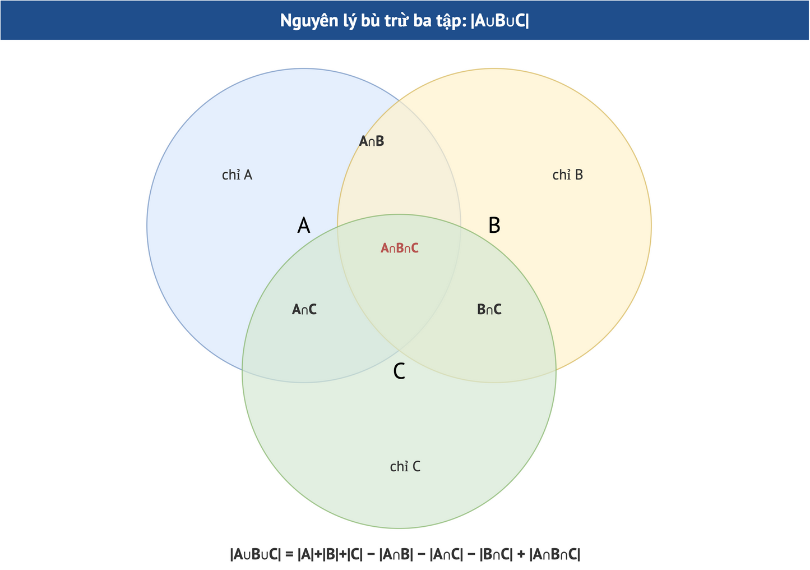

Module 4. Nguyên lý đếm cơ bản
Quy tắc cộng, nhân, phần bù, nguyên lý bù trừ
Môn: Toán rời rạc 1 (INT1358)Giáo trình 2016 §2.1–2.2 · Đề cương INT1358 mục 2.2 · Rosen §6.1, §8.5Đề thi: Câu 2 (đếm) đề 2023–2024Thời lượng gợi ý: ≈ 2,5 giờ100 câu trắc nghiệm (85 câu gốc) · 11 bài tự luận (3 gốc)
- Chọn đúng quy tắc cộng hay nhân
- Đếm bằng phần bù khi gặp “ít nhất”
- Áp dụng bù trừ cho hai và ba tập, đếm số chia hết trong đoạn
- Chia trường hợp đủ và rời nhau (biển số, đội văn nghệ, sách xếp)
Bài giảng dạng slide
Dùng phím ← → hoặc các nút; bấm “Toàn màn hình” để trình chiếu. Mỗi slide có khung “Giải thích cho người mới bắt đầu”.
Sơ đồ minh họa

1. Nội dung chi tiết
Hai quy tắc nền tảng được phát biểu qua tập hợp: nếu A, B rời nhau thì N(A ∪ B) = N(A) + N(B); tích Descartes có N(A × B) = N(A)·N(B). Nguyên lý bù trừ sửa lỗi “đếm hai lần” khi các tập giao nhau. Hầu hết bài đếm khó đều quy về việc chọn đúng tiêu chí chia trường hợp.
2. Ví dụ chi tiết có lời giải
Đi từ A đến C: qua B có 4 tuyến A→B và 3 tuyến B→C; hoặc đi thẳng theo 5 tuyến. Tổng: 4·3 + 5 = 17 cách (nhân trong từng phương án, cộng giữa các phương án).
Mã quốc gia dài 1–3 chữ số, tiếp theo là 10 chữ số dạng NXX-NXX-XXXX với N ∈ {1..6}, X ∈ {0..9}.
- Mã quốc gia: 10 + 10² + 10³ = 1110.
- NXX: 6·10·10 = 600; NXX: 600; XXXX: 10⁴.
- Tổng: 1110·600·600·10⁴ = 3.996.000.000.000 (khoảng 4·10¹²).
Từ 1000 đến 5000 có bao nhiêu số chia hết cho 6 hoặc 9? (2.1.2a)
- Bội của 6: ⌊5000/6⌋ − ⌊999/6⌋ = 833 − 166 = 667.
- Bội của 9: 555 − 111 = 444.
- Bội của 18: 277 − 55 = 222.
- 667 + 444 − 222 = 889.
15 cuốn: 5 Toán, 6 Vật lý, 4 Hóa (khác nhau); các cuốn cùng chủ đề nằm cạnh nhau. Xem mỗi chủ đề là một khối: 3! cách sắp khối, nhân 5!·6!·4! cách xếp trong khối: 6·120·720·24 = 12 441 600.
Xếp A,B,C,D,E,F thành hàng sao cho A cạnh B và C cạnh D: gộp thành hai khối (AB), (CD) cùng E, F: 4! = 24; mỗi khối 2 cách đổi chỗ: 24·2·2 = 96.
3. Thực hành tương tác
Nhập đoạn [a, b] và các số chia; công cụ liệt kê từng số hạng bù trừ và đối chiếu với đếm trực tiếp.
4. Bối cảnh lý thuyết và lịch sử
5. Case study
Kích thước không gian tìm kiếm: mã PIN 4 chữ số có 10⁴ khả năng; ràng buộc “không có hai chữ số liền nhau giống nhau” còn 10·9³ = 7290. Mỗi ràng buộc là một lần dùng quy tắc nhân/phần bù để ước lượng độ khó bẻ khóa bằng vét cạn.
6. Bẫy khi làm bài
• Với bài chia hết: liệt kê BCNN từng giao trước khi tính.
• Với biển số/mã: xác định chữ cái/chữ số có được lặp không.
Tự kiểm tra nhanh (10 câu, đổi bộ được)
Mỗi lần rút 10 câu từ kho của module. Bấm đáp án để chấm ngay; mọi câu đều có giải thích; có nút làm lại từng câu, đổi bộ câu hỏi, và kết quả được ghi vào Sổ lỗi & ôn tập.